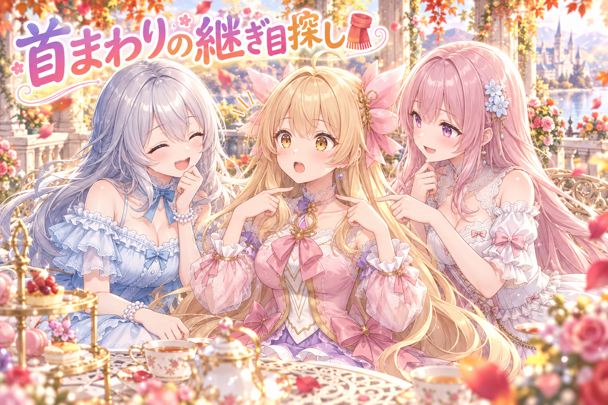
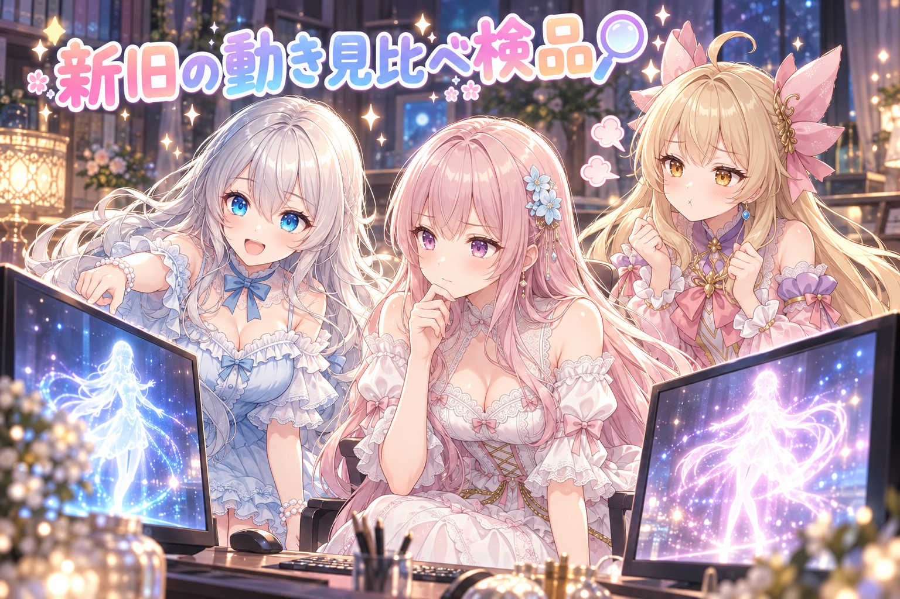
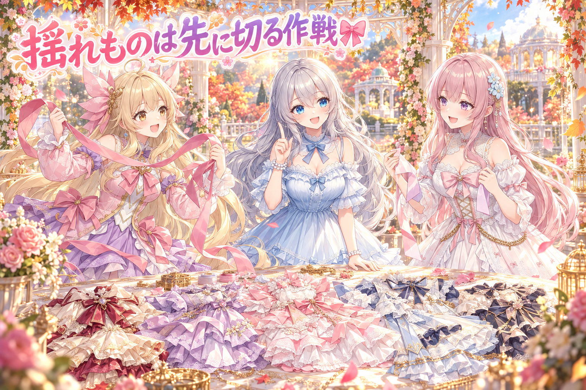
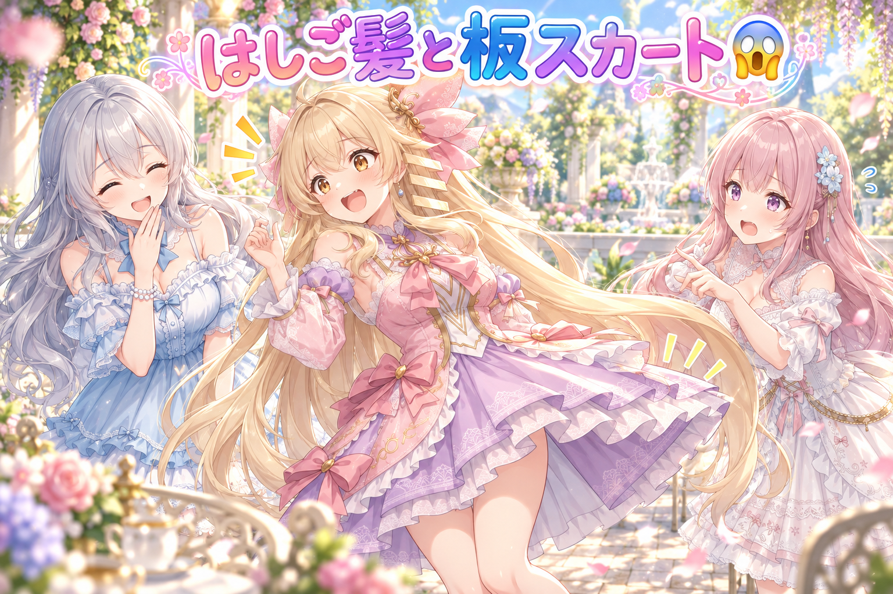
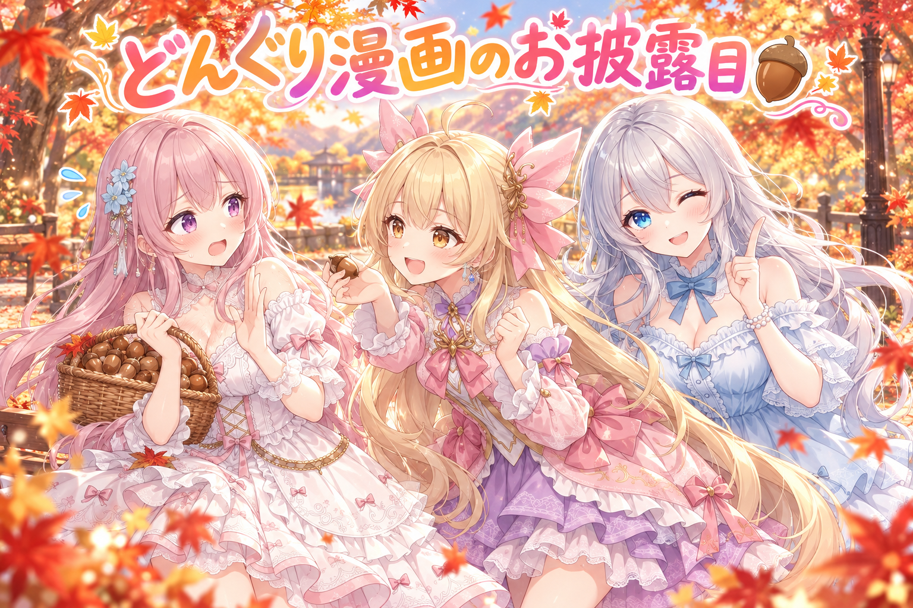
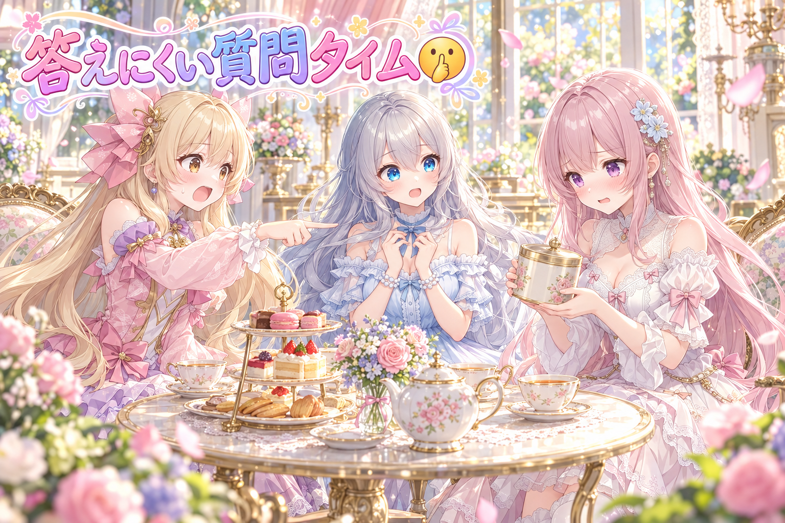

📌 3行まとめ
- アイリスの全身Live2Dで、首と胴の継ぎ目・鎖骨の二重線・「襟の後ろに首がある」ように見える違和感について、プロの直し方を調べた
- 古い動きと新しい動きを左右に並べた比較動画を何本も作り、厳しい目で検品をくり返した
- 揺れるパーツの選び方と作る順番を見直した一方、顔を横に向けると横髪がはしご状に割れる・スカートが板みたいに動く問題が見つかった

ルピナス （笑顔）
こんばんは、AIBSの夜のお茶会へようこそ。今日もアイリスの体のお手入れ回です。

アイリス （ドヤ顔）
前回、肩の継ぎ目を見つけられたあたしだよ！今日は肩から上に引っ越してきました！

フィオナ （ふつう）
引っ越しというより、継ぎ目探しの範囲が首まで広がっただけですね、アイリスちゃん。

ルピナス （ふつう）
首、襟、髪、スカート。今日は上から下まで「なんか変」を追いかけた一日だったよね。それと、朝の6時から夜中まで作業してたから、そこは後でちゃんと叱ります。
1. 首と胴の継ぎ目、襟の後ろの首問題🧣

Live2Dは、1枚の絵を「首」「胴」「服」のようにパーツに分けて、それぞれを動かすことで立体的に見せる仕組みです。今日気になったのは首まわりの3つ。首の層と胴の層が重なる付け根に境目の線や色の段差が見えること、胴と服の両方に鎖骨の線が描かれていて少しずれて二重に見えること、そして衣装のハイネックの襟と首の位置関係が不自然で「首が襟の後ろにあるように見える」「首と服の中心がずれている」と感じたことです。思いつきで直すと毎回やり方がバラバラになるので、まずLive2Dモデラーさんたちの定番の直し方と、その違和感が気のせいじゃないかを調べてまとめました。

アイリス （考え中）
ねえねえ、首ってさ、普段気にしたことなかったけど、こんなに難しい場所だったの？
フィオナ （ふつう）
首は頭と胴の間で、どちらの動きにも引っぱられる場所なんです。境目が一番ばれやすいところですね。

アイリス （笑顔）
わかる〜。あたしもタートルネック着ると、首どこ行ったってなるもん。
ルピナス （ふつう）
それは服の話でしょ。今日のは「絵の首」が襟の後ろに隠れて見える話よ。

フィオナ （考え中）
鎖骨も困りものでした。胴にも服にも鎖骨が描いてあって、少しずれると線が二本に……。

アイリス （びっくり）
鎖骨が二本！？あたし、骨が多い子だと思われちゃう！

ルピナス （大笑い）
骨が多いアイドルは新ジャンルすぎるよね。

フィオナ （笑顔）
なので、プロのやり方を調べました。影や線は「どれか一枚の層にだけ描く」のが基本のようです。二枚に描くから二重になるんですね。

アイリス （ふつう）
じゃあ襟のほうは？首が後ろにいるやつ。
フィオナ （考え中）
首の層が胴より奥に描かれていて、襟は服の層に描かれていて……重ね順と、首と襟の中心の位置が合っているかを確かめる必要があります。直すのはこれからです。
アイリス （ドヤ顔）
つまり今日のあたしは、首のお医者さんの診断書をもらったところってことだね！
ルピナス （笑顔）
そう。で、その診断書の一行目が「骨は多くない」。安心した？
📝 ポイント（初心者向け解説・技術メモ・まとめ）
- 初心者向け解説：首と胴のパーツは、二枚の紙を少し重ねて貼るのに似ています。両方の紙に同じ線を描くと、ちょっとずれただけで線が二本に見えちゃうの。線はどちらか一枚にだけ描くのがコツです🧣
- 技術メモ：首の付け根は首側を胴の下まで長めに伸ばして潜らせ、境目が胴で隠れるようにするのが定番。鎖骨・付け根の影は一つの層だけに持たせる。衣装の上半身層に襟や首元の肌まで描かれている場合、素体の首との描画順と中心位置のずれを先に確認する。
- ひとことまとめ：同じ線は一枚にだけ、が継ぎ目対策の第一歩。
2. 古い動きと新しい動き、左右に並べて厳しい検品🔍

表情や動きの直しが本当に良くなったかを確かめるために、画面の左に前の版、右に直した版を並べて、同じ名前の動きを順番に流す比較動画を作りました。お辞儀・嬉しい・笑う・ぴょこっと跳ねる・首を横に振る・考える・首をかしげる・うなずく・こっくり居眠り・驚く・むくれる・ジト目など、十数種類の動きを40秒弱で一気に見られる形です。「嬉しい」は目を開けたままの笑顔、「笑う」は閉じた目で大きく口を開ける、のように動きごとの正解を決めてから、甘くしない検品係に見てもらう流れを、直すたびに何回もくり返しました。
ルピナス （笑顔）
さあ始まりました、新旧アイリス動き比べ選手権。実況は私、ルピナスがお送りします。
アイリス （びっくり）
え、選手権なの！？左も右もあたしなんだけど！
ルピナス （ふつう）
まずはお辞儀。左のアイリス、深々と……右のアイリス、こちらも深々と。
フィオナ （考え中）
次は「嬉しい」と「笑う」です。ここ、区別がつかないと困るんですよね。嬉しいは目を開けたまま、笑うは目を閉じて大笑い。
アイリス （笑顔）
嬉しいと笑うって違うの？あたしいつも両方いっぺんにやってるよ？
フィオナ （ふつう）
アイリスちゃんは区別しなくていいんです。モデルのアイリスちゃんが区別できればいいんです。
ルピナス （大笑い）
本人より分身のほうが器用になっていく……。続いて居眠り。こっくり、こっくり、はっと起きて……少し眠そう。
ルピナス （ふつう）
ちなみにこの比較動画、作っては検品、直しては検品で、何本も作ったんだよね。
フィオナ （ふつう）
左右に並べると、片方だけ見ていたら気づかない差が見えるんです。「直したつもり」で終わらせないためのやり方ですね。
アイリス （ドヤ顔）
じゃあ優勝は右のあたしってことでいい？
ルピナス （ふつう）
審査員が甘くない係だから、結果は「まだ全部は言えない」が正直なところね。

アイリス （怒り）
選手権なのに表彰式がないじゃん！
📝 ポイント（初心者向け解説・技術メモ・まとめ）
- 初心者向け解説：髪を切ったあとに、前の写真と並べて見比べると変化がよく分かるのと同じです。動きも「前」と「今」を横に並べると、良くなったか悪くなったかがひと目で見えます🔍
- 技術メモ：同じモデル・同じ動き名を左右2画面に並べて連続再生する比較動画（今回は30fps・40秒弱）を作り、動きごとに期待する見た目（目の開閉・口の形など）を先に文章で定義してから検品にかける。作った本人以外のレビュー役に見せると見落としが減る。
- ひとことまとめ：直したら必ず並べて見る、が「直したつもり」の予防線。
3. 揺れるリボンはどれ？切り抜く順番を逆にする作戦🎀

アイリスには5着の衣装（ドレス・アイドル衣装・オフショルダーのニット・ゴスロリ・和風）があります。リボンや腰の垂れ、袂、フリル、房など、本来ふわっと揺れるべき部品を衣装ごとに選び、物理演算でどう揺らすのが一番きれいかを調べて決めました。また、これまでの作り方は「服を丸ごと描く→層に分ける→揺れる部品を後から切り抜く→抜いた穴をAIに描き直させる」流れでしたが、描き直しで模様や位置がずれ、境目に線が出たり切り残しが出たりしていました。そこで、次のキャラからは揺れる部品を先に別パーツとして切り分ける順番にする提案が出て、それが良いやり方かどうかを調べて検証しました。
アイリス （ドヤ顔）
揺らすもの選び？そんなの決まってるじゃん、全部揺らせばいいんだよ！

フィオナ （あわあわ）
全部揺れたら、服がゼリーみたいになっちゃいます！
アイリス （笑顔）
ゼリーの服、かわいくない？ぷるぷるアイドル。
ルピナス （ふつう）
はい、討論開始ね。アイリスは全部揺らす派、フィオナは？
フィオナ （ふつう）
本物の服で揺れるのはリボンや垂れ布、袂みたいな軽くて端が自由な部分だけです。そこを選んで、衣装ごとに揺れ方を決めたいです。
アイリス （考え中）
むー。じゃあ切り抜く順番の話は？あたし、後から切るのでよくない？
フィオナ （考え中）
後から切ると、リボンを外した跡に穴が開くので、AIに描き直してもらうんです。でも描き直すと金の線の本数や角度が元とずれて、境目がガタガタに……。
アイリス （びっくり）
あ、それ見た！V字の線が食い違ってたやつ！
フィオナ （笑顔）
なので、最初からリボンを別の部品として用意しておけば、穴を描き直す必要がそもそも無くなります。

アイリス （呆れ）
でもさ、先に切るほうが手間増えない？あたし面倒くさいの嫌い〜。

フィオナ （怒り）
後で穴埋めをくり返すほうが、ずっと面倒です！
ルピナス （笑顔）
はい、裁定。揺れるものは選んで揺らす。切る順番は先に。……アイリス、面倒くさい派の意見は一つだけ採用します。

ルピナス （ウインク）
「ぷるぷるアイドル」って響き。採用先は未定。
📝 ポイント（初心者向け解説・技術メモ・まとめ）
- 初心者向け解説：ケーキの上のいちごを後から取ると、クリームに穴が開いちゃいますよね。最初からいちごを別のお皿に分けておけば、穴の修理はいりません🎀
- 技術メモ：揺れ物（リボン・垂れ・袂・フリル・房）は衣装ごとに選定し、振り子型の物理演算（長さ・遅れ・揺れの強さ）を部品ごとに設定する。層分け後にSAM2で切り抜き→生成AIで穴埋めする流れは、模様の位置ずれ・切り残し・部品裏の欠落が起きやすいため、揺れ物を先に分離した素材を用意する順番の見直しを検討した。
- ひとことまとめ：直すより、穴を作らない順番を選ぶ。
4. 👀 今日のやらかし

顔を左右に向けると、横髪に縦の帯のような段（はしご状の段差）が出て、頬にも斜めの線が出ることに気づきました。作った側の見立てでは、横髪の部品の端が定規で切ったようなまっすぐな線になっていて、顔の向きに合わせて変形したときに段として見えてしまうのが原因では、とのこと。ただしこれは未検証の見立てで、まだ直していません。さらに、体を左右に傾けたとき、衣装の裾とスカートが布らしく揺れずに「一枚の板」のように動いてしまう問題も。こちらは当てずっぽうで数値をいじらず、原因を診断してもらうところまで進めました。

フィオナ （びっくり）
お姉ちゃん、大変です。アイリスちゃんが横を向くと、髪がはしごになります。

アイリス （衝撃）
はしご！？あたしの髪、登れるの！？
フィオナ （考え中）
登れるかどうかは……試してみないと分かりませんね。

ルピナス （呆れ）
フィオナ、そこは真面目に検討しなくていいの。

フィオナ （照れ）
あっ、すみません。つい丁寧に考えてしまいました。
ルピナス （ふつう）
原因の見立ては、横髪の部品の端がまっすぐ切りっぱなしになってることらしいわ。でも、まだ「らしい」の段階ね。

アイリス （しょんぼり）
それで、スカートもなんか変なんでしょ？
フィオナ （あわあわ）
はい。体を傾けると、スカートがひらっとならずに、板のまま一緒に傾きます。
アイリス （怒り）
板！？髪ははしごで、スカートは板！？あたし、日曜大工じゃん！

アイリス （泣き）
お姉ちゃん、笑ってないで直してよ〜！
ルピナス （ふつう）
だからこそ、ここは焦って数字をいじらないの。物理の値を勘で変えると、別の所が壊れて、原因が二つに増えるだけ。まず診断してもらってから直す。
フィオナ （ふつう）
診断係さんに、なぜ板になるのかを調べてもらっているところです。
アイリス （考え中）
じゃあ今日のあたしは、はしごと板を持ったまま待機？
📝 ポイント（初心者向け解説・技術メモ・まとめ）
- 初心者向け解説：紙をはさみでまっすぐ切った端は、紙を曲げるとカクッと目立ちますよね。髪の毛みたいに柔らかく見せたい部品は、端もふんわりさせておく必要があるのかも、というお話です💇
- 技術メモ：顔の角度パラメータ（今回は左右18°ほど）で横髪にはしご状の段・頬に斜め線が出現。部品の下端・側端が直線で切られていることが原因候補（未検証）。スカートが傾きで剛体のように動く件は、物理を外して値を固定した止め絵との比較から診断中で、パラメータの符号や打ち消し合い、定番の組み方との差を確認してから修正する方針。
- ひとことまとめ：見立ては見立て。確かめるまでは直さない。
5. どんぐり漫画、公開しました🌰

Live2Dとは別に、三姉妹の日常ギャグ漫画を動画にしたショート作品『どんぐりを拾っていただけなのに』を公開しました。紅葉の公園で、フィオナがどんぐりをかごいっぱいに拾うお話です。絵と声はAIで作り、短い時間でオチまで見られる形にしています。最新の告知はX（https://x.com/irisfionaAIBS）からどうぞ。
ルピナス （笑顔）
ここでクイズです。フィオナはどんぐりをかごいっぱいに拾いました。そのあと何が起きたでしょう？

フィオナ （衝撃）
食べません！どんぐりは食べ物じゃありません！
アイリス （考え中）
じゃあ、かごが重すぎて、フィオナが地面に埋まった！
フィオナ （怒り）
どんぐりの重さでは埋まりません！
ルピナス （ふつう）
ヒントは、肩に小さなお客さまが乗ってきたこと。
アイリス （びっくり）
小さなお客さま……あ、わかった！小さいあたし！

フィオナ （呆れ）
アイリスちゃんは肩に乗れるサイズではありません。
ルピナス （ウインク）
正解は……動画で確かめてね。ここで言ったらオチが逃げちゃうから。
アイリス （怒り）
前回の予告動画と同じで、オチ隠してる〜！
ルピナス （笑顔）
前回作った仕組みの精神が、ちゃんと根付いてるでしょ。
📝 ポイント（初心者向け解説・技術メモ・まとめ）
- 初心者向け解説：漫画動画は、紙芝居に声と動きをつけたようなもの。短い時間でも「始まり→あれ？→オチ」の三段があると、最後まで見たくなります🌰
- 技術メモ：AIで描いたコマとAI音声を組み合わせ、縦型のショート動画として公開。告知文ではオチに触れず、本編へ誘導する書き方にした。
- ひとことまとめ：オチは本編で見てもらうのがいちばん楽しい。
6. 🎁 お楽しみコーナー：禁断の質問コーナー

リスナーさんから届きそうな、ちょっと答えにくい質問に三姉妹が挑戦します。
ルピナス （笑顔）
禁断の質問その一。「三姉妹の中で、一番寝起きが悪いのは誰？」
フィオナ （衝撃）
アイリスちゃん、すぐ人のせいにしないでください！
ルピナス （ふつう）
正直に言うと、目覚ましを止めて二度寝するのはアイリスよね。

アイリス （照れ）
……だって目覚ましって、止めるためにあるじゃん。
ルピナス （笑顔）
禁断の質問その二。「お互いに内緒にしてることはある？」
フィオナ （照れ）
……お姉ちゃんの紅茶の茶葉、こっそりちょっとだけ使ったことがあります。

ルピナス （びっくり）
えっ、あの減り方はフィオナだったの？
アイリス （ドヤ顔）
禁断の質問コーナーで、本物の禁断が出ちゃった！
ルピナス （笑顔）
いいわ、許す。代わりに次は一緒に淹れましょう。……さて、みんなが三姉妹に聞いてみたい「ちょっと答えにくい質問」、コメントでこっそり送ってね！
7. 💐 今日のまとめ
- 同じ線を二枚の層に描くと、少しずれて二重に見える。線や影は一枚にだけ
- 直した動きは前の版と左右に並べて見比べると、「直したつもり」に気づける
- 揺れる部品は後から切り抜くより、最初から分けておくほうが穴埋めのずれが出にくい
- 原因が分からない崩れは、勘で数字をいじらず診断してから直す
それと、今日は朝早くから夜中までの長丁場でした。作業の合間に、お水を飲んでちゃんと休んでね。みんなは、作業の途中でどうやってひと休みしてる？
💬 コメント
お名前とコメントだけで送れるよ（承認されるとみんなに表示されます🌸）
コメントを読み込み中…